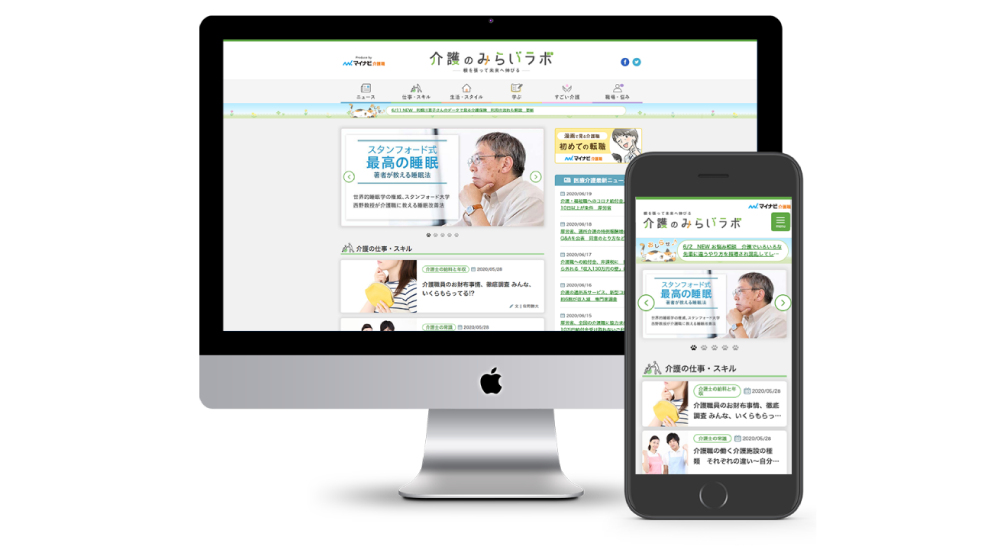

WORKS
制作物

オウンドメディアサイト制作
Designe / Cording / Direction
- 概要
- 新規オウンドメディア立ち上げにおけるデザイン・コーディング業務を担当。
ワイヤーフレームをもとに、約50ページの静的HTMLサイトを制作し、ページデザインからマークアップまで一貫して対応。
SEOを意識したHTML構造や内部リンク設計を行い、検索流入を考慮したサイト設計を実施。
また、ターゲット層である40〜50代女性を意識し、視認性や可読性を重視した、親しみやすく分かりやすいデザイン設計を意識して対応。
- 使用ツール
- XD ・ Photoshop ・ Illustrator ・ VisualStudioCode
- 制作期間
- 1.5ヶ月
- 対応範囲
- ディレクション ・ ワイヤーフレーム作成 ・ デザイン（PC・SP） ・ フロントエンドコーディング（HTML・CSS・JS） ・ SEO内部施策 ・ 内部リンク設計 ・ 品質管理